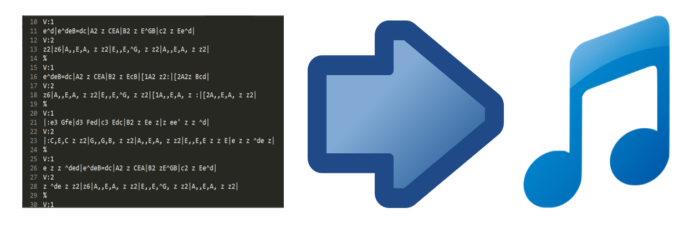

Oscar Health's Provider Portal Document Library (React, SCSS, Python Flask)
The Provider Portal is Oscar Health's provider-facing web application through which in-network medical practitioners can view member health info and submit medical records. Previously, users had to traverse through many pages on the portal to reach its file-upload channels, which providers were misusing by uploading documents that don't satisfy the channels' use case criteria.
As an intern, I implemented a file upload page on the portal, accessible via the portal's home page, to allow seamless document sharing between providers and Oscar. The page will serve as the portal's main file-upload channel, thus streamlining workflows for Oscar's operational teams responsible for processing uploaded documents and ensuring that receive accurate documents.
Guardian Life Insurance's Apigee Dev Portal (HTML, CSS, Javascript, PHP)
 I developed the front end of a responsive Drupal 7 website that exposes Guardian Life Insurance’s APIs for internal use by Guardian’s IT department. Throughout various agile sprint cycles, I collaborated with senior developers and a UX designer through concept and development of deliverables via Bitbucket, weekly Skype meetings, and code review.
I developed the front end of a responsive Drupal 7 website that exposes Guardian Life Insurance’s APIs for internal use by Guardian’s IT department. Throughout various agile sprint cycles, I collaborated with senior developers and a UX designer through concept and development of deliverables via Bitbucket, weekly Skype meetings, and code review.
Where's My Money (HTML, CSS, Javascript)
 This web application was my final group project for 6.813 and was designed to help parents with college students manage their family expenses. Since many parents are computer-illiterate, we focused on simplicy in design to facilitate navigation through the website.
This web application was my final group project for 6.813 and was designed to help parents with college students manage their family expenses. Since many parents are computer-illiterate, we focused on simplicy in design to facilitate navigation through the website.
Note that the class focused solely on front-end design, so the website lacks a formal back-end. Consequently, it displays fixed data upon loadup and discards changes made by users prior to a browser refresh.
ABC-Music-Player (Java)

ABC files are text files that encode music via ASCII characters. As such, they can be easily shared and edited on computers. However, because they are text files, an external program is needed to play the music they encode. This project, written in Java for a class on software construction, parses ABC files and represents various musical elements like notes, rests, and chords as recursive data types, which are then fed into a MIDI player for users to listen to the encoded music.